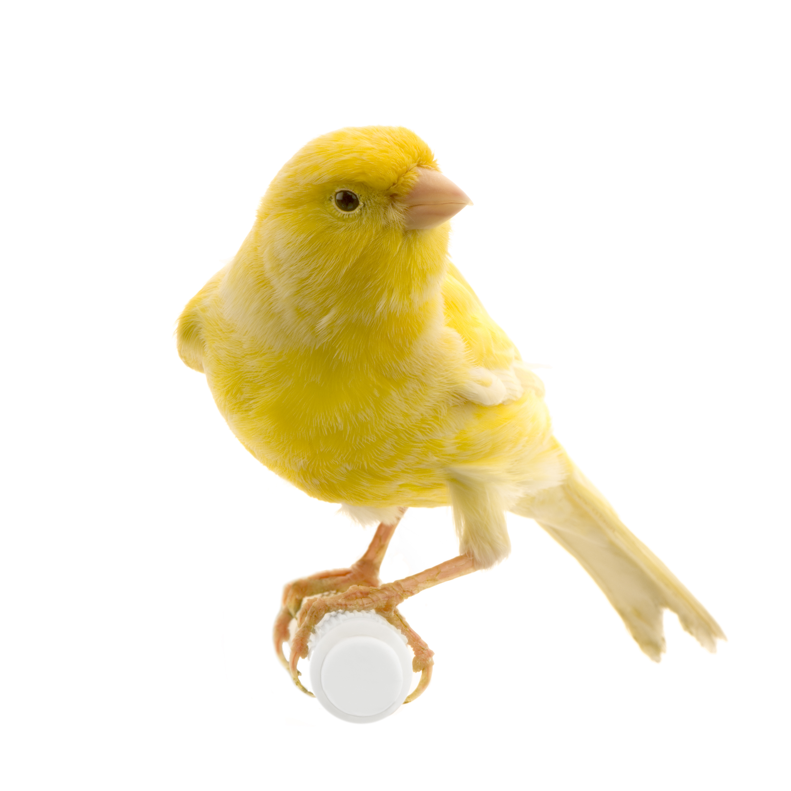
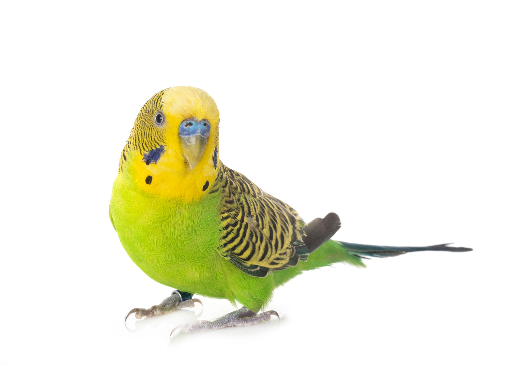

Macaw
Life Expectancy: 30-50 years
Loyalty: Very High
Temperament: Intelligent, Playful
Size: Large
▼

Sulphur-crested Cockatoos
Life Expectancy: 40-70 years
Loyalty: High
Temperament: Intelligent, loving
Size: Medium to large
▼

Fischer's Lovebird
Life Expectancy: 10-15 years
Loyalty: Medium to High
Temperament: fun-loving, social
Size: Small to Medium
▼

Canary
Life Expectancy: 8-15 years
Loyalty: Moderate
Temperament: Calm, Singers
Size: Small
▼

Budgerigar
Life Expectancy: 5-8 years
Loyalty: Moderate
Temperament: Social, Lively Active
Size: small
▼